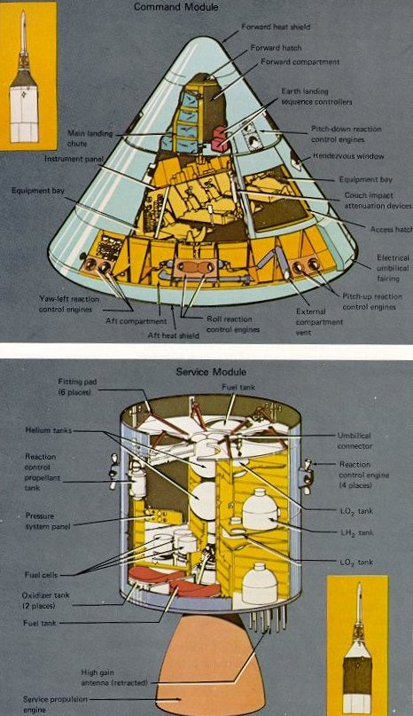

| 
|
Above: Looking like a huge toy top
the conical command module
was crammed with some of
the most complex equipment
ever sent into space. The three
astronaut couches were surrounded by instrument panels,
navigation gear, radios, life-support systems, and small
engines to keep it stable during
reentry. The entire cone, 11
feet long and 13 feet in diameter, was protected by a
charring heat shield. The 6.5-ton CM was all that was
finally left of the 3000-ton
Saturn V stack that lifted oft
on the journey to the Moon.
Below: Packed with plumbing and
tanks, the service module was
the CM's constant companion
until just before reentry. So
all components not needed
during the last few minutes of
flight, and therefore requiring
no protection against reentry
heat, were transported in this
module. It carried oxygen for
most of the trip; fuel cells to
generate electricity (along
with the oxygen and hydrogen to run them);
small engines to control pitch, roll,
and yaw; and a large engine
to propel the spacecraft into -and out of- lunar orbit.
|